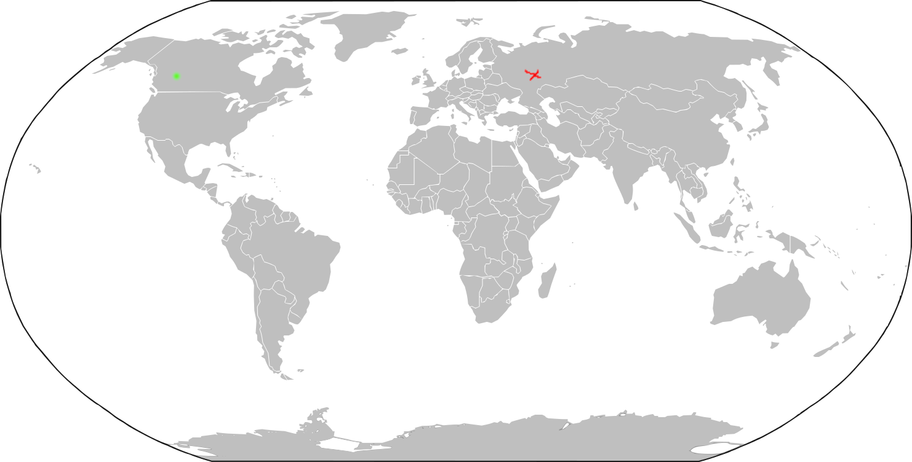
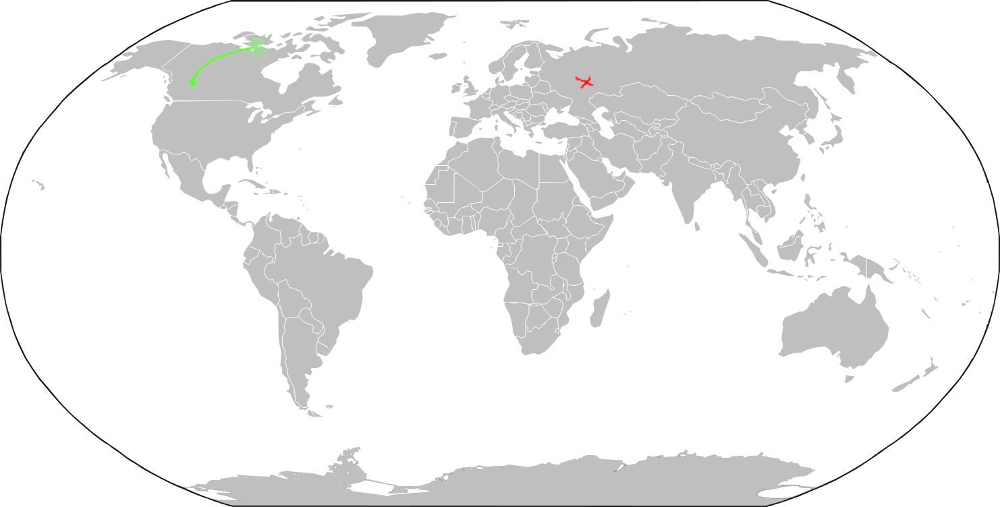
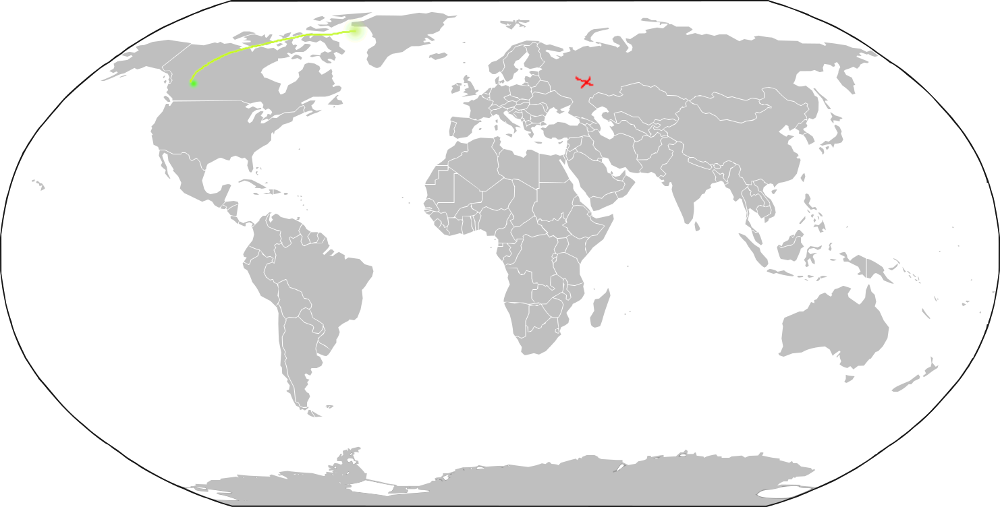
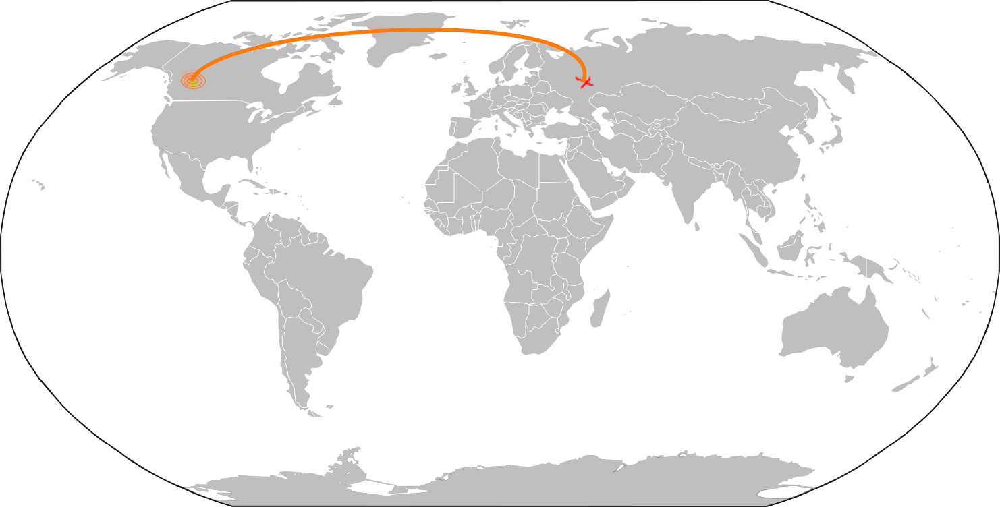

For my net art piece i thought it would be interesting to design an interactive visual ping map of the world.
By that I mean, a user could select a point on the map, ping that location, and actually visualize the time it would take for that ping to return.
Ping is a computer network administration software utility used to test the reachability of a host on an Internet Protocol (IP) network.
It measures the round-trip time (usually in milliseconds) for messages sent from the originating host to a destination computer that are echoed back to the source.
The user would start by seeing a map of the world with their location as a point on the map
The user would then pick some point on the map that they want to ping
It would then show the ping traverse the world toward the destination, ping, and return.
  
This animation would last as long as it took for the ping to reach destination and back.
The user could then select another point and repeat the animation(previous pings remain on the map)
I guess there could be some text that pops up after the ping returns that would indicate the actual ping in seconds, or a table underneath showing the most recent pings.
But thats all extra stuff I'd do if I had to implement this.
I think this would be a pretty cool visualization of a measurement of data being sent across an Internet communication link.
Some obvious problems I can see with implementing this would be: